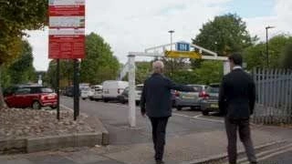

Christopher Caldwell
Can Britain reverse the Boriswave?
“You need to just take the country that you actually have.”
Play interview · 32:31
“You need to just take the country that you actually have.”
Play interview · 32:31
 27:59
27:59Ron sold newspapers on these streets in the 1940s. At 92, he came back for the first time in 56 years.



Photographs from protests helped an Egyptian man win his third appeal in Britain.